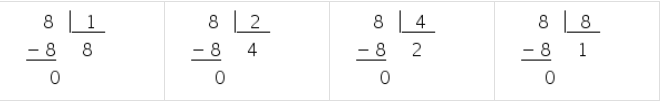

πclass — o principal pilar do seu aprendizado


Os múltiplos de um número são obtidos multiplicando o número por um fator. Este fator, por sua vez, é também divisor do múltiplo encontrado.
Exemplo:>6 é um múltiplo de 2, pois 2 x 3 = 6
2 é um divisor de 6, pois 62 = 3
Quando um número é múltiplo de outro é o mesmo que dizer que o primeiro é divisível pelo último. No nosso exemplo 6 é múltiplo de 2 e, portanto, é divisível por 2, ou seja, 2 é divisor de 6.
Sendo assim, os múltiplos de um número podem ser obtidos multiplicando-o por 1, 2, 3, 4, 5… Logo, os múltiplos de um número são infinitos.
Já os divisores de um número são aqueles cuja divisão tem como resultado um número inteiro, ou seja, a divisão é exata.
Podemos representar a fórmula geral para encontrar o múltiplo de um número como:
b = a.k
Onde,
b é o múltiplo
a é um número natural
k é um número natural qualquer
Observe a seguir o conjunto dos múltiplos de alguns números quando k varia de 0 a 10.

M(2) = {0, 2, 4, 6, 8, 10, 12, 14, 16, 18, 20, 2 . k, ...}
M(3) = {0, 3, 6, 9, 12, 15, 18, 21, 24, 27, 30, 3 . k, ...}
M(4) = {0, 4, 8, 12, 16, 20, 24, 28, 32, 36, 40, 4 . k, ...}

M(5) = {0, 5, 10, 15, 20, 25, 30, 35, 40, 45, 50, 5 . k, ...}
...
Os múltiplos dos exemplos acima foram obtidos realizando a multiplicação com um número qualquer.
Note também que todo número natural é múltiplo dele mesmo e o zero só tem um múltiplo, que é o próprio zero, mas ele é múltiplo de todos os números.
Para saber se um número é múltiplo de outro devemos dividir o múltiplo pelo número e a divisão deve ser exata (resto igual a zero).

A divisão é a operação inversa da multiplicação. Se 72 é divisível por 6, então 72 é múltiplo de 6.
Um número é divisor do outro quando não há resto na divisão. Observe os exemplos.

Veja que na divisão de 40 por 5 não há resto, ou seja, a divisão é exata e, portanto, 5 é divisor de 40. No outro exemplo restam 5 unidades após a divisão, então 7 não é divisor de 40.
Note que os números podem ter vários divisores. Veja o exemplo com o número 8.
Confira alguns exemplos de divisores de números naturais.

O conjunto dos divisores de um número é finito e vai do 1 ao próprio número, ao contrário dos múltiplos que são infinitos.
Observe que alguns números só possuem dois divisores: 1 e o próprio número. Esses números são chamados de números primos. São exemplos de números primos: 2, 3, 5, 7, 11, 13, 17 e 19.
Para ajudar a reconhecer se um número é divisor de outro existem os critérios de divisibilidade. Conheça alguns a seguir.
Divisibilidade por 2: todo número par, ou seja, terminados em 0, 2, 4, 6 e 8 possuem o 2 como divisor.
Exemplos:Divisibilidade por 3: se a soma dos algarismos de um número é divisível por 3, então 3 é divisor do número.
Exemplos:Divisibilidade por 5: os números que apresentam 0 ou 5 no algarismo das unidades possuem o 5 como divisor.
Exemplos:Divisibilidade por 9: se a soma dos algarismos de um número é divisível por 9, então 9 é divisor do número.
Exemplos:A fatoração consiste na representação em números primos, chamados fatores. Por exemplo, 2 x 2 é a forma fatorada de 4.
A forma fatorada de um número é obtida seguindo a sequência:
Exemplo: fatoração do número 40.

Portanto, a forma fatorada do número 40 é 2 x 2 x 2 x 5, que é o mesmo que 2^3 x 5.
A decomposição de dois números simultaneamente terá como resultado a forma fatorada do mínimo múltiplo comum entre eles.
A multiplicação dos fatores primos 2 x 2 x 2 x 3 x 5 tem como forma fatorada 2^3 x 3 x 5.
Portanto, o MMC de 40 e 60 é: 23 x 3 x 5 = 120.
Vale lembrar que as divisões sempre serão feitas pelo menor número primo possível, mesmo que esse número divida apenas um dos componentes.
O máximo divisor comum é encontrado quando multiplicamos os fatores que dividem simultaneamente os números fatorados.
Na fatoração de 40 e 60, podemos perceber que o número 2 foi capaz de dividir duas vezes o quociente da divisão e o número 5 uma vez.

Portanto, o MDC de 40 e 60 é: 2^2 x 5 = 20.
Seleção de videoaulas sobre esse assunto com ótimos professores que os ofertam gratuitamente na internet:
1. Um grupo de 4 nadadores atravessa uma piscina, que tem 20 m de um lado a outro, com tempos individuais de 12 s, 15 s, 18 s e 25 s. Esses atletas iniciaram um treino, de um mesmo lado da piscina, atravessando-a de um lado para outro continuamente. Quando chegam a um lado da piscina, eles imediatamente passam a nadar em direção ao lado oposto. A primeira vez em que os quatro nadadores chegarem, ao mesmo tempo, em um mesmo lado da piscina, o nadador mais rápido terá nadado um total de:
A) 1.000 m.
B) 2.000 m.
C) 2.500 m.
D) 1.500 m.
E) 3.000 m.
2. (Enem 2015) Um arquiteto está reformando uma casa. De modo a contribuir com o meio ambiente, decide reaproveitar tábuas de madeira retiradas da casa. Ele dispõe de 40 tábuas de 540 cm, 30 de 810 cm e 10 de 1.080 cm, todas de mesma largura e espessura. Ele pediu a um carpinteiro que cortasse as tábuas em pedaços de mesmo comprimento, sem deixar sobras, e de modo que as novas peças ficassem com o maior tamanho possível, mas de comprimento menor que 2 m.
Atendendo ao pedido do arquiteto, o carpinteiro deverá produzir:
A) 105 peças.
B) 120 peças.
C) 210 peças.
D) 243 peças.
E) 420 peças.
Queremos encontrar o MMC entre 12, 15, 18 e 25
Sabemos que:
>12 = 2² · 3
15 = 3 ·5
18 = 2 ·3²
25 = 5²
Então, o MMC (12, 15, 18, 25) = 2² ·3²- · 5² = 900 segundos.
Se o nadador mais rápido nada 20 metros a cada 12 segundos, temos que:
900 : 12 = 75 voltas e 75 · 20 = 1500 metros
2. Resposta: ECalcularemos o MDC entre 540, 810 e 1080:
540 = 2 · 3³ · 5
810 = 34 · 2 · 5
1080 = 2² · 3³ · 5
MDC (540, 810, 1080) = 3³ · 2 · 5 = 270
Mas as peças não podem ter 270 cm. O maior divisor de 270 é 135, então cada peça deve ter135 cm:
(40 · 540 + 30 · 810 + 10 · 1080) : 135 = 420 peças